Projekt: WOHNSIEDLUNG ZÜRICH-AFFOLTERN
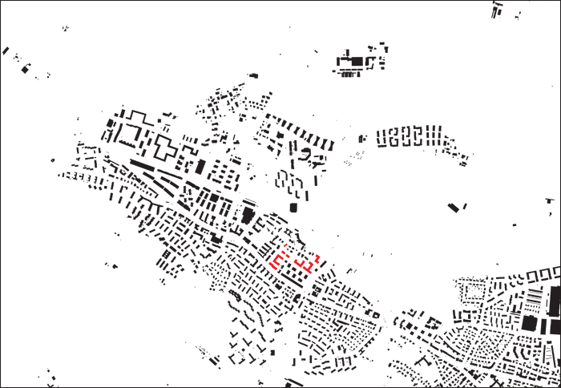
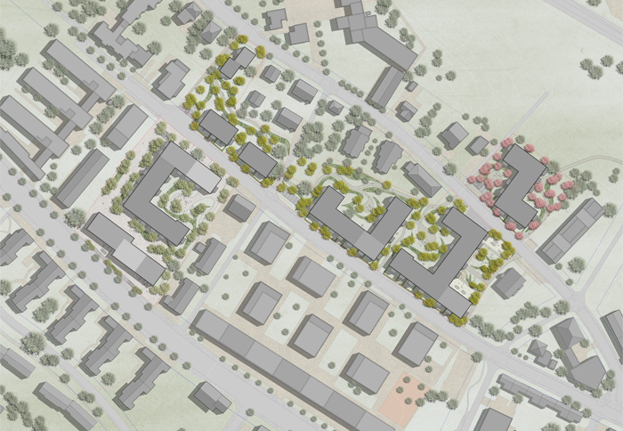
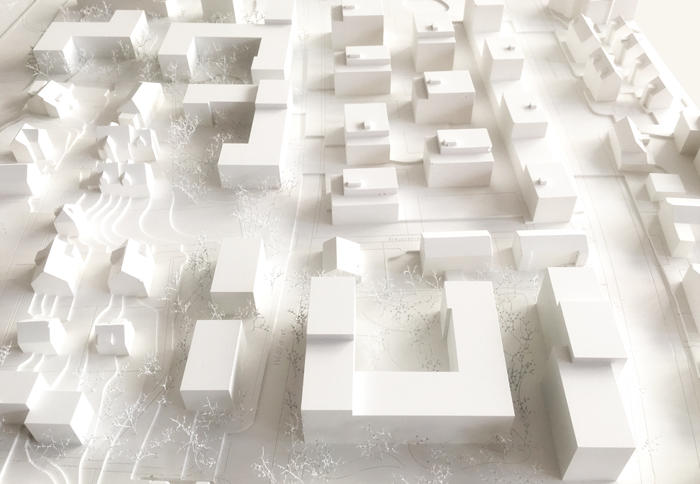
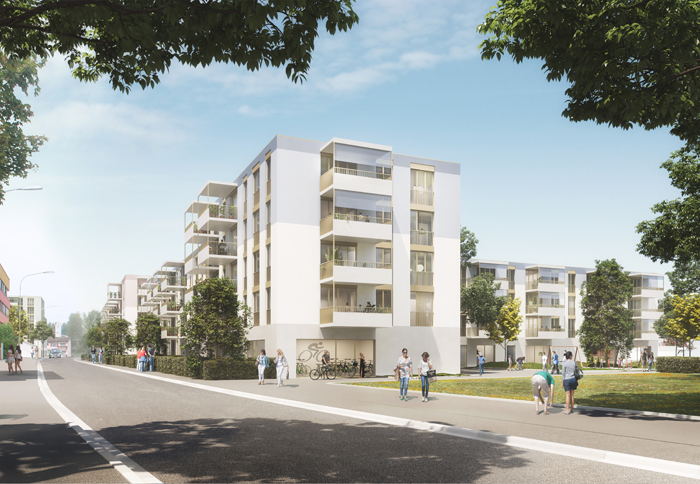
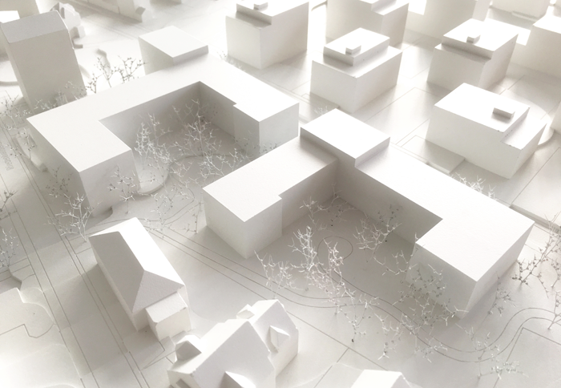
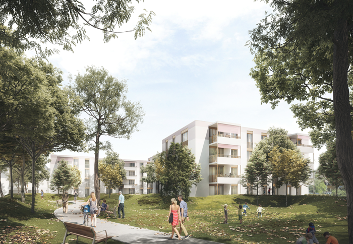
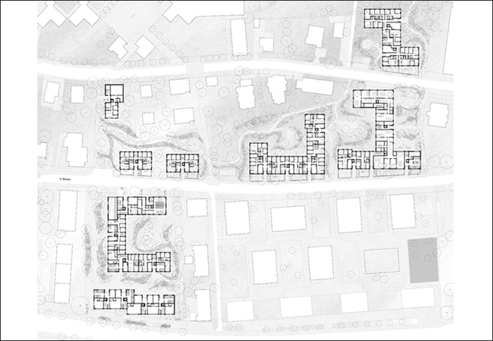
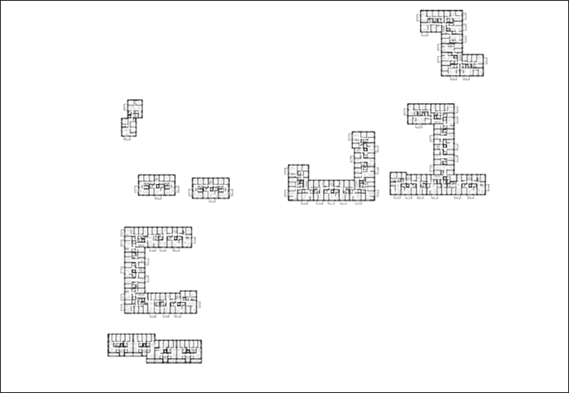
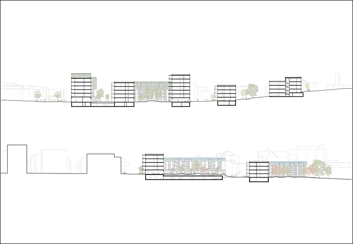
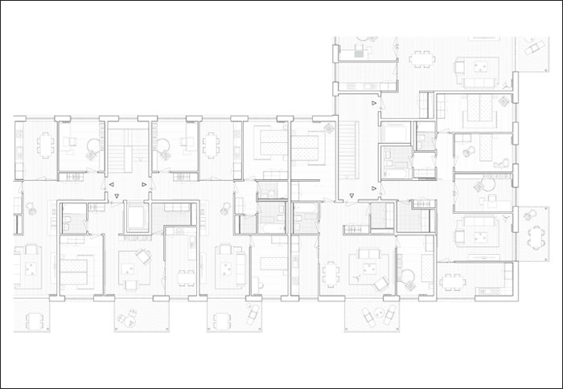
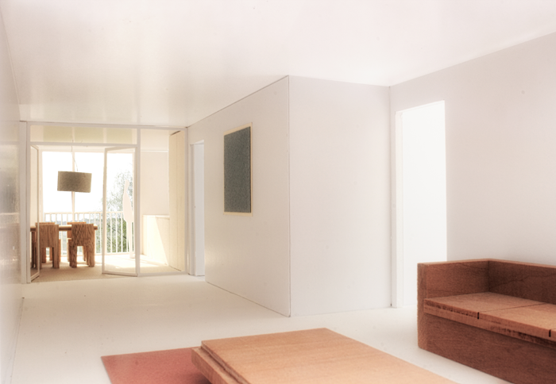
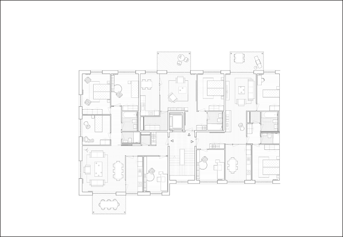
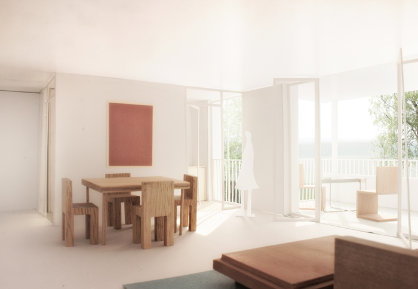
Projekt: WOHNSIEDLUNG ZÜRICH-AFFOLTERN
Ort: Waidmatt, Zürich-Affoltern (ZH)
Bauherrschaft: Baugenossenschaft Waidmatt
Program: Wohnen, Gewerbe, Gemeinschaftsraum, Doppelkindergarten
Gebäudekosten: 110’000’000 CHF
Datum: 2016
Typ: Offener Wettbewerb
Team: NYX architectes, Carolin Riede Landschaftsarchitektin BSLA
Bilder: Play-Time